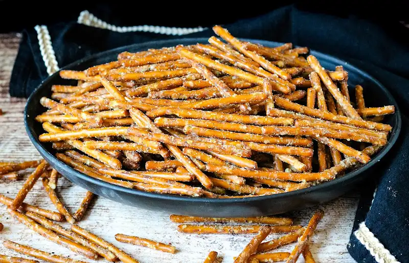

SPICY PRETZELS

These spicy pretzels are sure to be a hit at any event, or even as a fun snack to eat alone by the handful in your apartment at 3AM on a Thursday.
Ingredients
- 1 bag pretzel sticks (16 oz)
- 1 tsp cayenne pepper
- 1 tsp lemon pepper
- 1 1/2 tsp garlic powder
- 1 package Hidden Valley ranch dry mix
- 3/4 cup canola oil
- 1 gallon Ziploc baggie
Steps
-
Place the pretzels inside of the one gallon resealable bag.
- Mix the cayenne pepper, lemon pepper, garlic powder, ranch, and canola oil together.
- Pour mixture over pretzels in bag. Leaving overnight is recommended but a couple of hours will work just fine too.
- Spread pretzels out on a large baking sheet and bake in the oven at 200 for 40 min.
- It's time to eat! Store the leftovers in a bag and save them for later!
Return Home